Магнитоэлектрический линейный реверсивный обратимый привод (актуатор) с плоским ферромагнитным якорем
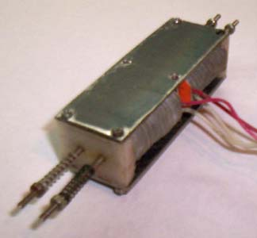
1. Введение
Линейные приводы имеют широкий спектр применения в различных областях техники. В частности, уже весьма давно используются электромагнитные приводы с втяжным якорем [11, 12]. Их недостатки - короткий ход якоря и необходимость применения возвратной пружины. Также известны преобразователи вращательного движения электромотора в поступательное движение рабочего органа [5], но они имеют усложненную механическую конструкцию, что повышает цену и снижает надежность. В то же время наличие постоянных магнитов с высокими энергетическими характеристиками [7], особенно редкоземельных, позволяет конструировать линейные магнитоэлектрические приводы, обеспечивающие и возвратно-поступательное движение [2] при изменении полярности питающего напряжения, и достаточно большое усилие и амплитуду перемещения [4]. Данная разработка преследовала цель создания линейного привода, обеспечивающего возвратно-поступательное движение со значительной амплитудой при реверсе питающего напряжения (тока), широкий рабочий диапазон частот (от нуля до сотен герц), максимально возможное усилие в расчете на потребляемую мощность (ток) при его достаточной линейности в диапазоне перемещений.
2. Назначение и конструкция привода
Магнитоэлектрический линейный привод (актуатор) с плоским ферромагнитным (стальным) якорем изначально конструировался для использования в качестве низкочастотного вибратора в диапазоне частот 0 … 100 Гц и даже несколько выше - примерно до 500 Гц, хотя и со значительным снижением амплитуды колебаний. Также он может работать и на постоянном токе с изменением полярности при необходимости. В частности, привод способен создавать постоянное усилие при отсутствии движения якоря. Эскиз привода показан на рис. 2.1.
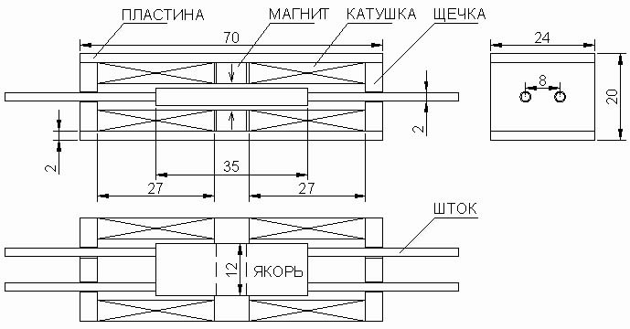
Рис. 2.1. Магнитоэлектрический линейный реверсивный привод с плоским стальным якорем: магнит Nd-Fe-B П12х7х5, пластина - магнитная сталь (Ст3, Ст10), якорь - магнитная сталь (Ст3, Ст10, электротехническая), щечка - немагнитный материал (пластик, алюминий), шток - любой металл (бронза, латунь, сталь).
На боковых магнитопроводящих стальных пластинах корпуса установлены друг напротив друга (оппозитно) постоянные магниты состава Nd-Fe-B [7] типоразмера П12х7х5 (прямоугольная призма со сторонами 12, 7 и 5 мм), намагниченные по размеру 5 мм в установке импульсного намагничивания [16]. Направление намагниченности оппозитных магнитов встречное. По обе стороны от магнитов находятся однотипные прямоугольные катушки. Стальной якорь толщиной 4 мм и длиной 35 мм движется в зазоре между магнитами, заходя концами внутрь катушек. Ход якоря может достигать примерно 13 мм в обе стороны от центрального положения (или 26 мм при движении из одного крайнего положения в другое). Стальные пластины с магнитами скреплены немагнитными щечками, имеющими отверстия, в которых свободно ходят штоки якоря (простейшая реализация линейных подшипников скольжения).
Принцип работы привода заключается в следующем. Магнитный поток оппозитных магнитов растекается вдоль якоря по его объему в направлении торцов корпуса, подмагничивает якорь и, выходя из него и пронизывая обмотки, возвращается обратно к магнитам через стальные пластины корпуса. Усилие создает перпендикулярная направлению тока в обмотках составляющая магнитного потока (т. е. перпендикулярная оси привода составляющая магнитной индукции). При подаче в катушки тока одинакового направления якорь создает усилие, направленное, например, вправо (левая катушка выталкивает якорь, а правая его втягивает). При смене направления тока усилие, развиваемое якорем, меняется на противоположное.
Для уменьшения потерь на вихревые токи при частотном управлении якорь может быть склеен или склепан из нескольких стальных пластин толщиной примерно по 0.5 мм. Наилучшим выбором будет электротехническая сталь, но может использоваться и малоуглеродистая, например Ст3, Ст10. Примерная расчетная масса якоря (со штоками) 17 г.
Чтобы обеспечить возврат якоря в заданное положение (обычно центральное), а также скорректировать частотную колебательную характеристику привода (зависимость амплитуды вынужденных колебаний якоря от частоты возбуждающего тока) при использовании его в качестве вибратора, могут применяться пружины (на эскизе не показаны).
При необходимости привод может быть дополнен датчиком положения якоря.
3. Расчет катушек привода
В приводе использованы прямоугольные катушки. Прямоугольная катушка – осесимметричная катушка индуктивности (соленоид) в форме прямоугольного параллелепипеда с центральным отверстием такой же формы. Эскиз прямоугольной катушки показан на рис. 3.1.
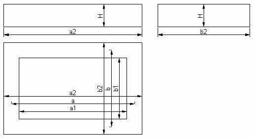
Рис. 3.1. Эскиз прямоугольной катушки: a1 – длина отверстия, a2 – длина катушки, a – средняя длина катушки, b1 – ширина отверстия, b2 – ширина катушки, b – средняя ширина катушки, H – высота катушки.
Параметры прямоугольной
катушки:
Длина отверстия a1
Длина катушки a2
Средняя длина катушки a:
Ширина отверстия b1
Ширина катушки b2
Средняя ширина катушки b:
Толщина обмотки может считаться постоянной, поэтому выполняется соотношение:
Таким образом, один из параметров a1, a2, b1, b2 является зависимым от трех остальных. Например:
Средняя ширина катушки b:
Высота катушки H
Диаметр обмоточного провода D
Фактор упаковки (коэффициент заполнения)
l =
LAMBDA = Lambda [10].
Удельное сопротивление обмоточного провода
rE
= Roe
Плотность материала обмоточного провода
r
Поперечное сечение обмотки прямоугольной катушки имеет форму прямоугольника. Его
площадь определяется произведением толщины обмотки на высоту:
Число витков N обмотки прямоугольной катушки равно отношению площади поперечного сечения обмотки к сечению провода диаметром D с учетом фактора упаковки l и находится по формуле:
Расчет активного сопротивления R прямоугольной катушки может быть сделан следующим образом:
С учетом того, что
получаем:
Таким образом:
Или
в зависимости от того, какой параметр считается заданным – a1 или b1.
Для источника постоянного напряжения U значение тока I рассчитывается по формуле:
Если источник питания является источником тока I, то его требуемое выходное напряжение U рассчитывается по формуле:
Плотность тока в проводе обмотки равна отношению известного значения тока I к площади поперечного сечения провода (4 I)/(p D2). Плотность тока в обмотке j может быть рассчитана аналогично с учетом фактора упаковки:
Рассеиваемая в обмотке с активным сопротивлением R при протекании через нее постоянного тока I мощность P находится по формуле:
Масса проводника m, требующегося для намотки катушки, равна произведению плотности материала провода r на объем катушки с учетом фактора упаковки l:
с учетом
получаем:
Для расчета катушек привода по вышеприведенным формулам использована программа-калькулятор Rectangular Coil [9]. Результаты расчета одной катушки представлены на рис. 3.2.
Заданные
типоразмеры:
a1 = 0.0145 м
a2 = 0.024 м
b1 = 0.0065 м
b2 = 0.016 м
H = 0.027 м
D = 0.00045 м
l = 0.558
rE
= 1.67 ∙ 10-8 Ом ∙ м (медный провод)
r
= 8700 кг/м3
Напряжение питания 3.2 В
Рассчитанные
параметры:
N = 450
витков
R = 2.882
Ом
I = 1.11 А
Плотность тока в обмотке 3.895 А/мм2
Рассеиваемая мощность 3.553 Вт
Требуемая масса медного провода примерно 38 г
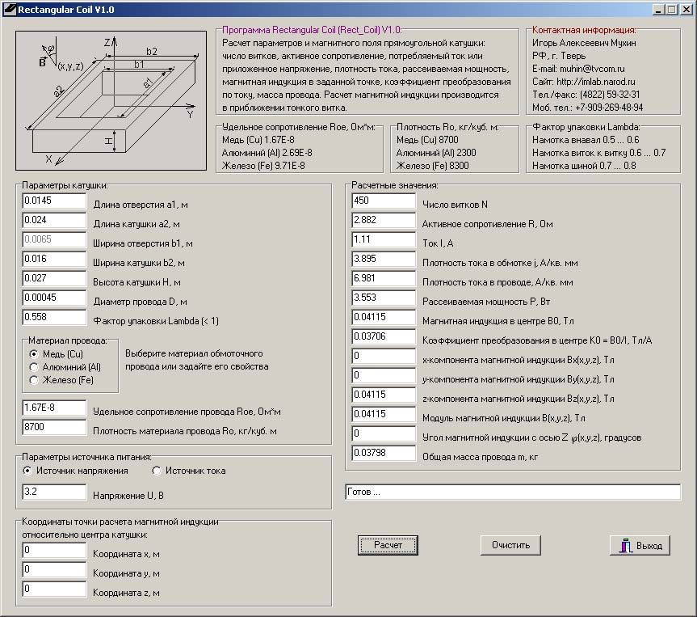
Рис. 3.2. Расчет одной катушки привода с помощью программы-калькулятора Rectangular Coil.
Магнитодвижущая сила (МДС) катушки составляет 1.11 ∙ 450 ≈ 500 А ∙ витков.
4. Расчеты тяговой характеристики и индуктивности привода
Расчеты развиваемого усилия и индуктивности обмоток магнитоэлектрического привода выполнены методом конечных элементов [13] с помощью программы Ansoft Maxwell [1]. Эскиз трехмерной расчетной модели показан на рис. 4.1.
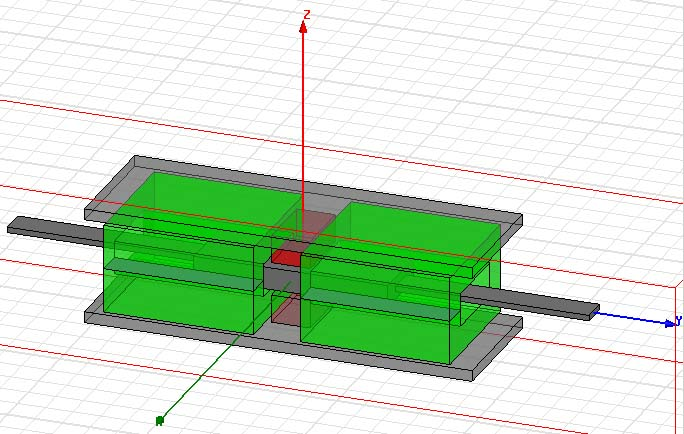
Рис. 4.1. Эскиз трехмерной расчетной модели магнитоэлектрического реверсивного линейного привода с плоским стальным якорем: стальные детали показаны серым цветом, постоянные магниты – красным, катушки – зеленым. Движение якоря – вдоль оси Y. Шаг сетки 5 мм.
Исходные данные:
Постоянные магниты состава Nd-Fe-B с остаточной индукцией 1.15 Тл и коэрцитивной
силой по намагниченности 950 кА/м (соответствует марке
N35 [7]).
Стальные детали сделаны из стали 1010 (Ст10) или Ст3. Магнитные свойства,
принятые для расчета, показаны на рис. 4.2.
МДС каждой катушки 500 А ∙ витков (450 витков при потребляемом токе 1.11 А).
Плотность тока в обмотках 3.895 А/мм2.
Рис. 4.2. Магнитные свойства стали для расчета индуктора (сталь 1010 или Ст3).
Распределение магнитного поля в приводе при заданной плотности тока в обмотках (3.895 А/мм2) показано на рис. 4.3.
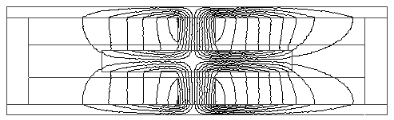
Рис. 4.3. Распределение магнитного поля в приводе в приближении двухмерной модели (шток не показан, ход якоря – слева направо, направление усилия – слева направо).
Результаты расчетов усилия приведены в таблице 4.1 и на рис. 4.4.
Таблица 4.1. Зависимость индуктивности обмоток привода и усилия, развиваемого якорем, от его положения (ход от крайнего левого до крайнего правого положения в соответствии с рис. 2.1).
|
Положение якоря относительно центра, мм |
-13 |
-10 |
-5 |
0 |
5 |
10 |
13 |
|
Усилие якоря, Н |
1.2747 |
1.923 |
2.089 |
2.017 |
1.6814 |
1.2762 |
1.081 |
|
Индуктивность привода, мГн |
21.234 |
22.554 |
23.972 |
26.061 |
26.634 |
26.971 |
24.626 |
Среднее значение усилия на длине хода +10 мм (в обе стороны) составляет 1.797 Н.
При последовательном включении катушек индуктивность привода на постоянном токе составляет примерно 25 мГн, активное сопротивление – примерно 6 Ом. Электрическая постоянная времени L/R ≈ 4 мс, т. е. катушки привода представляют из себя фильтр нижних частот (ФНЧ) с частотой среза примерно 40 Гц. Здесь следует заметить, что с изменением (увеличением) частоты индуктивность привода может значительно изменяться (как правило, в сторону уменьшения, см. п. 7).
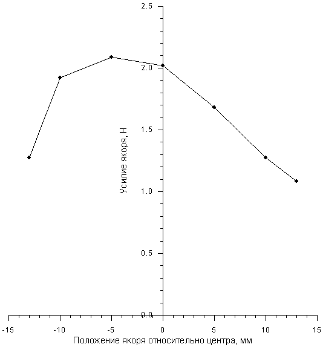
Рис. 4.4. Зависимость усилия, развиваемого приводом, от положения якоря (ход якоря – слева направо, направление усилия – слева направо).
5. Расчет динамических характеристик
В соответствии со вторым законом Ньютона [17]:
где m – масса якоря, F – действующая сила, x – перемещение, t – время.
Если на траектории разгона усилие F считать постоянным, то движение якоря будет равноускоренным (с постоянным ускорением):
Тогда, полагая начальное положение равным -x0 (крайнее левое положение), а начальную скорость равной нулю, получим:
Если пройденный путь составит 2x0 (из крайнего левого –x0 в крайнее правое +x0 положение), то:
Например, полагая m = 0.017 кг (расчетное значение массы стального якоря со штоками), x0 = 0.01 м (ход якоря из центрального положения в любую сторону), F = 1.8 Н (примерное среднее значение усилия на длине хода +10 мм), получим:
Если половину пути (x0) якорь разгоняется с ускорением F/m, а вторую половину пути тормозится с таким же ускорением, то суммарное время перехода из крайнего левого в крайнее правое положение будет определяться формулой:
Для тех же значений параметров получаем:
Таким образом, при равноускоренно-равнозамедленном движении туда-обратно на максимально возможном ходе якорь совершит возврат к начальному положению за время примерно 39 мс, что соответствует частоте его колебаний примерно 26 Гц.
Если движение происходит по гармоническому закону с амплитудой x0 и частотой f:
то
Тогда для амплитудных значений имеем (F0 – амплитудное значение силы, развиваемой якорем, при питании его обмотки переменным током) :
Например, если F0 = 1.8 Н (примерное среднее значение усилия на длине хода +10 мм от среднего положения), m = 0.017 кг, x0 = 0.01 м (максимально возможный ход якоря от центрального положения в любую сторону), то:
что вполне соответствует рассчитанной выше частоте для равномерно ускоренного возвратно-поступательного движения 26 Гц. На рис. 5.1 показан график зависимости достижимой амплитуды при гармонических колебаниях якоря от частоты (колебательная характеристика).
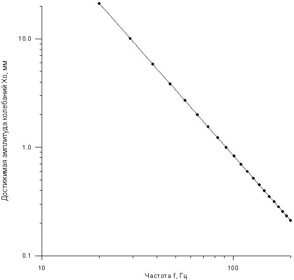
Рис. 5.1. Зависимость достижимой амплитуды колебаний свободного якоря (без пружин) от частоты (шкалы логарифмические).
Достижимая амплитуда колебаний на частоте f = 100 Гц составит:
При использовании для центровки якоря пружин с суммарной жесткостью k уравнение вынужденных колебаний якоря под действием гармонической силы F = F0cos(2 p f t) может быть записано в виде (без учета демпфирования):
Решение этого уравнения после затухания собственных колебаний якоря [17]:
Оно неплохо представляет поведение якоря даже и при некотором демпфировании в области частот, достаточно удаленных от собственной резонансной частоты f0:
Если F0 = 1.8 Н (примерное среднее значение усилия на длине хода +10 мм от центрального положения), m = 0.017 кг, k = 1500 Н/м (при смещении на 1 мм пружины оказывают на якорь возвращающее усилие 1.5 Н), то амплитуда колебаний x0 в зависимости от частоты f (собственная резонансная частота f0 ≈ 47.276 Гц, может служить для оценки коэффициента жесткости пружин):
Сравнительные колебательные характеристики (зависимость амплитуды колебаний от частоты) привода со свободным и подпружиненным якорем показаны на рис. 5.2.
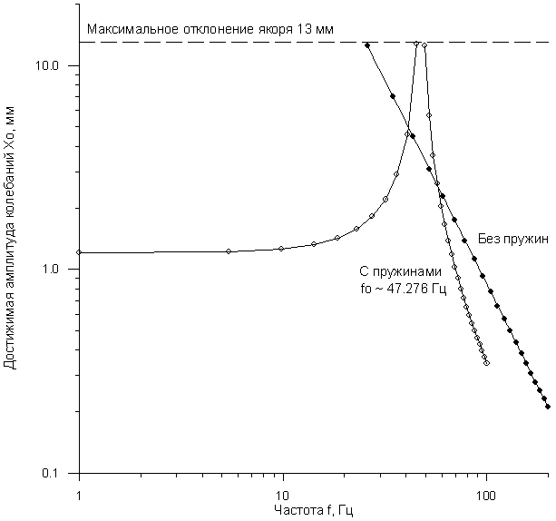
Рис. 5.2. Зависимость достижимой амплитуды колебаний якоря с пружинами (резонансная частота 47.276 Гц) и без пружин от частоты (шкалы логарифмические).
Пружины обеспечивают возврат якоря в центральное положение, делают его колебательную характеристику близкой к горизонтальной в области частот ниже резонансной, но в несколько раз ухудшают амплитуду колебаний на частотах выше резонансной. Применение пружин имеет свои ограничения. Увеличение коэффициента жесткости увеличивает резонансную частоту и поднимает колебательную характеристику на частотах немного выше резонансной (при условии, что демпфирование невелико), но приводит к уменьшению амплитуды колебаний на частотах ниже резонансной. В области частот, существенно превышающих реально достижимые резонансные частоты, колебательные характеристики привода для пружин разной жесткости мало отличаются друг от друга и существенно уступают колебательной характеристике привода со свободным якорем. Так что в некоторых случаях следует отказаться от использования пружин и применить электронную систему управления якорем с датчиком положения. Для привода, используемого в качестве вибратора, можно использовать вариант свободного на заданной амплитуде колебаний якоря и ограничивающие дальнейший свободный ход упорные пружины с повышенной жесткостью.
6. Экспериментальная модель
Для проверки расчетов изготовлена экспериментальная модель магнитоэлектрического линейного реверсивного привода (рис. 6.1).
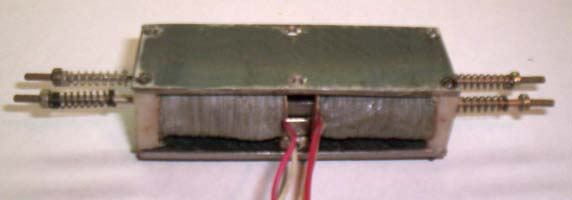
Рис. 6.1. Экспериментальная модель магнитоэлектрического линейного реверсивного привода.
Конструкция привода в основном соответствует той, которая использована для расчетов (п. 3, 4). Каждая катушка имеет 450 витков медного провода диаметром 0.45 мм, активное сопротивление примерно 3 Ома, индуктивность обособленной катушки на частоте 1000 Гц примерно 1.2 мГн. Для повышения осевой устойчивости якоря плоский шток заменен двумя стержнями, движущимися в подшипниках скольжения торцевых щечек. На стержни надеты ограничительные пружины, обеспечивающие некоторый свободный ход якоря вблизи его центрального положения. Катушки привода могут быть включены последовательно или параллельно по схеме рис. 6.2 таким образом, что направление тока в обмотках одинаковое для обеих катушек.
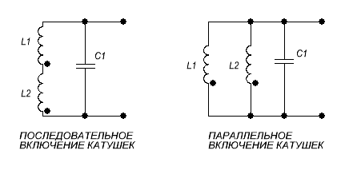
Рис. 6.2. Схемы последовательного и параллельного включения катушек привода и конденсатора для компенсации реактивной емкости.
Для компенсации реактивной мощности вблизи заданной частоты питающего напряжения может использоваться включенный параллельно источнику питания конденсатор (C1 на рис. 6.2). Емкость компенсирующего конденсатора при параллельном включении катушек должна быть примерно в 4 раза больше емкости при последовательном их включении для одной и той же рабочей частоты.
Частота собственных колебаний fLC LC-контура с активным сопротивлением R выражается формулой [17]:
Если необходимо компенсировать реактивную мощность привода на заданной частоте fLC, то емкость компенсирующего конденсатора будет определяться следующим образом:
Значения емкости компенсирующего конденсатора с учетом того, что R ≈ 6.2 Ом, а индуктивность изменяется при изменении частоты питающего напряжения (п. 6) приведены в таблице 6.1. Применение компенсирующего реактивную мощность конденсатора может оказаться необязательным на низких частотах (примерно до 100 Гц). На высоких частотах (порядка сотен Гц) он потребуется для того, чтобы снизить требования к величине напряжения источника питания.
Таблица 6.1. Емкость компенсирующего реактивную мощность конденсатора для разных рабочих частот магнитоэлектрического привода.
|
Рабочая частота fLC, Гц |
Индуктивность обмоток привода L, мГн |
Емкость компенсирующего конденсатора, мкФ |
|
25 |
≈20 |
1027 |
|
50 |
11 |
510 |
|
100 |
9.5 |
210 |
|
500 |
7.85 |
12.7 |
7. Экспериментальные результаты
Активное сопротивление катушек привода при их последовательном включении, замеренное омметром (мультиметр APPA-107N), составляет 6.2 Ом.
Индуктивность последовательно соединенных катушек привода измерялась LC-метром Zoyi ZT-DQ01 на разных частотах. На частоте 100 Гц она составляет 7.00 мГн при среднем положении якоря, на частоте 120 Гц - 6.95 мГн и на частоте 1000 Гц - 4.67 мГн. При смещении якоря индуктивность несколько изменяется как в большую, так и в меньшую сторону.
Также индуктивность измерялась методом амперметра-вольтметра [3] на разных частотах при номинальном токе питания. Схема для измерения индуктивности привода методом амперметра-вольтметра приведена на рис. 7.1. С генератора сигналов звуковой частоты Г3-118 или аналогичного синусоидальный сигнал подается на усилитель мощности [15], а с него через амперметр PA1 (цифровой мультиметр MY65) на последовательно соединенные обмотки привода. Параллельно обмоткам подключен вольтметр PV1 (цифровой мультиметр MY65). Схема приведена для последовательного включения катушек, при параллельном включении измерения производятся аналогично. При проведении измерений якорь привода либо не фиксируется, т. е. совершает возвратно-поступательные движения с частотой напряжения питания, либо жестко фиксируется в центральном положении. Действующее значение тока питания, при котором производятся измерения индуктивности, примерно соответствует принятой в расчетах (п. 3, 4) величине 1.11 А, при которой МДС каждой катушки привода составляет 500 А ∙ витков.
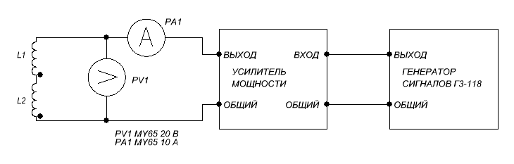
Рис. 7.1. Схема для измерения индуктивности обмоток привода методом амперметра-вольтметра в диапазоне частот 25 … 500 Гц.
Для тока I и напряжения U, измеренных с помощью амперметра PA1 и вольтметра PV1 на частоте f, справедливо соотношение:
где R – активное сопротивление обмоток привода, а L – их суммарная индуктивность. Тогда:
Результаты измерений для разных состояний якоря привода приведены в таблицах 7.1 и 7.2.
Таблица 7.1. Индуктивность последовательно соединенных обмоток привода на разных частотах при свободном якоре (якорь совершает колебания).
|
Частота f, Гц |
Напряжение U, В |
Ток I, А |
Индуктивность Lf, мГн |
|
25 |
8.219 |
1.089 |
27.4 |
|
50 |
7.878 |
1.102 |
11.3 |
|
100 |
9.438 |
1.1 |
9.44 |
|
500 |
26.93 |
1.055 |
7.88 |
Таблица 7.2. Индуктивность последовательно соединенных обмоток привода на разных частотах при зажатом якоре (колебания отсутствуют).
|
Частота f, Гц |
Напряжение U, В |
Ток I, А |
Индуктивность Lf, мГн |
|
25 |
7.286 |
1.104 |
14.4 |
|
50 |
7.806 |
1.101 |
10.9 |
|
100 |
9.609 |
1.107 |
9.67 |
|
500 |
26.93 |
1.062 |
7.83 |
Можно сделать вывод, что расчет индуктивности, произведенный для случая питания обмоток привода постоянным током (п. 4), выполнен правильно. С ростом частоты индуктивность обмоток привода уменьшается. График зависимости индуктивности обмоток привода при последовательном включении от частоты приведен на рис. 7.2.
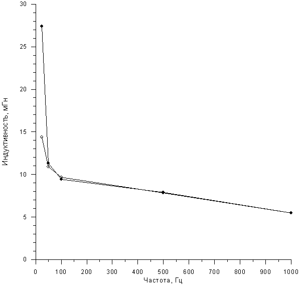
Рис. 7.2. Зависимость индуктивности обмоток привода при их последовательном включении от частоты питающего напряжения (● – якорь свободен, ○ – якорь зажат).
Схема установки для измерения усилия, развиваемого приводом, показана на рис. 7.3, а внешний вид – на рис. 7.4. На вертикали станины [14] крепится линейная однокоординатная подача [5]. На ее подвижной платформе фиксируется магнитоэлектрический привод. На горизонтали станины устанавливается подставка с используемыми в качестве динамометра бытовыми цифровыми весами Soehnle таким образом, чтобы стержневые штоки якоря привода при измерении усилия упирались в измерительную площадку весов. Измерительный диапазон весов 0 ... 5000 г, разрешение 1 г. Последовательно соединенные обмотки привода подключаются к регулируемому блоку питания [6] через амперметр (цифровой мультиметр DT9205A), служащий для дополнительного контроля величины тока. Измерения проводились без ограничительных пружин на стержневых штоках якоря. Ток питания последовательно соединенных обмоток привода при измерении усилия составлял 1.11 А (магнитодвижущая сила по 500 А ∙ витков на катушку в соответствии с п. 4). Линейная однокоординатная подача приводилась в движение ходовым винтом вручную посредством вращения рукоятки. В каждом вновь достигнутом платформой заданном положении (с шагом 1 мм) производилось ее встряхивание, чтобы уменьшить погрешность, связанную с трением штоков привода, а затем - визуальное считывание измеренного весами усилия. Результаты измерений приведены в таблице 7.3 и на рис. 7.5. С помощью данной установки можно также измерить коэффициент жесткости возвратных пружин при их использовании.
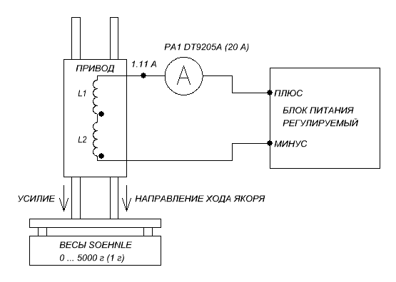
Рис. 7.3. Схема установки для измерения усилия привода.
Таблица 7.3. Зависимость усилия, развиваемого якорем, от его положения (ход от одного до другого крайнего положения, направление перемещения совпадает с направлением усилия).
| Ход якоря от крайнего положения, мм | -12 | -11 | -10 | -9 | -8 | -7 | -6 | -5 | -4 | -3 | -2 | -1 | 0 | 1 | 2 | 3 | 4 | 5 | 6 | 7 | 8 | 9 | 10 | 11 | 12 | 13 |
| Усилие якоря (в сумме с собственным весом), гс | 140 | 170 | 180 | 192 | 196 | 200 | 205 | 217 | 224 | 226 | 233 | 233 | 234 | 224 | 220 | 215 | 208 | 199 | 195 | 192 | 186 | 170 | 164 | 167 | 152 | 124 |
| Усилие якоря (чистое без веса), Н | 1.223 | 1.529 | 1.631 | 1.753 | 1.794 | 1.835 | 1.886 | 2.008 | 2.080 | 2.100 | 2.171 | 2.171 | 2.181 | 2.080 | 2.039 | 1.988 | 1.916 | 1.825 | 1.784 | 1.753 | 1.692 | 1.529 | 1.468 | 1.498 | 1.346 | 1.060 |
Развиваемое якорем привода усилие посредством весов измеряется в граммах. Для пересчета в ньютоны из усилия в граммах (таблица 7.3) вычитается собственный вес якоря (20 г), и полученный результат делится на 98.1.
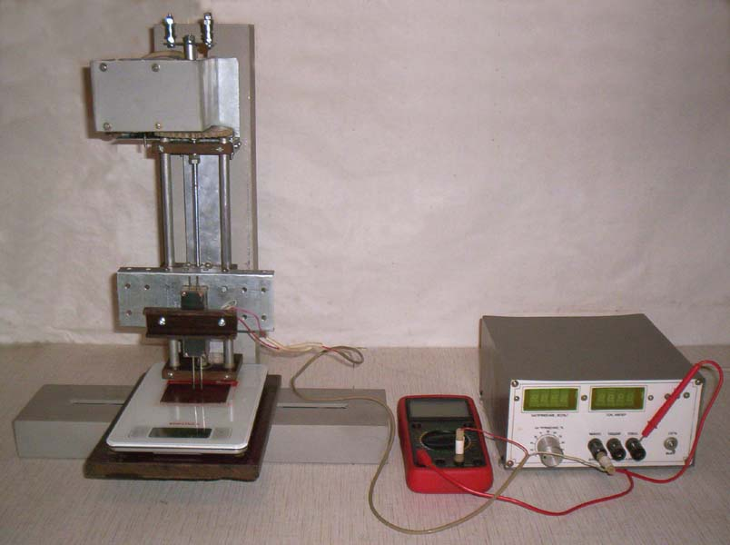
Рис. 7.4. Установка для измерения усилия, развиваемого магнитоэлектрическим приводом. На станине установлена однокоординатная линейная подача, к передвижной платформе которой прикреплен привод. Для измерения усилия используются цифровые весы, на измерительную площадку которых давят стержневые штоки якоря. Ток в обмотках привода возбуждается с помощью регулируемого блока питания и контролируется цифровым амперметром.
На рис. 7.5 показан график зависимости экспериментально измеренного усилия, развиваемого приводом, от хода якоря (ход якоря от одного крайнего положения до другого направлен в ту же сторону, что и создаваемое им усилие). Результат измерений достаточно хорошо согласуется с расчетным результатом (рис. 4.4).
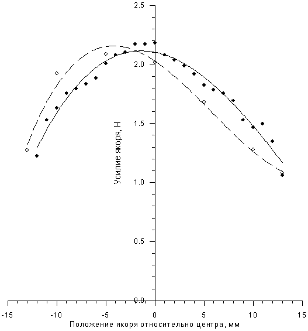
Рис. 7.5. Зависимость усилия, развиваемого приводом, от положения якоря (направление ходя якоря совпадает с направлением развиваемого им усилия, ● – экспериментальные данные, ○ – расчет (рис. 3.2)). Ток питания обмоток 1.11 А.
Электрическая амплитудно-частотная и фазовая характеристики (АЧХ и ФЧХ), т. е. зависимость амплитуды тока и величины фазового сдвига между током и возбуждающим напряжением постоянной амплитуды от частоты напряжения возбуждения, изучались на установке, схема которой показана на рис. 7.6.
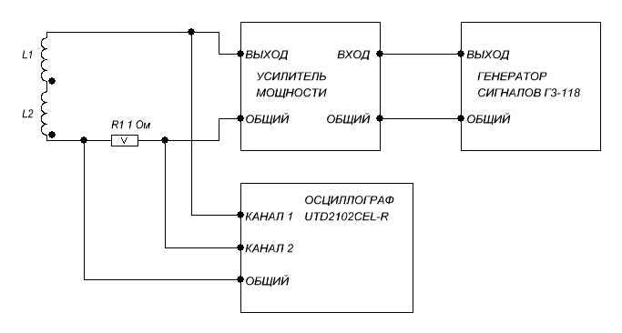
Рис. 7.6. Схема установки для изучения амплитудно-частотных и фазовых характеристик привода.
На обмотки привода через добавочный резистор сопротивлением 1 Ом от генератора сигналов Г3-118 или аналогичного с усилителем мощности [15] подается синусоидальное напряжение возбуждения постоянной амплитуды 10 В в диапазоне частот 5 … 500 Гц. Якорь привода в процессе измерений находится в свободном состоянии, т. е. совершает колебания с частотой возбуждающего напряжения. С помощью двухканального осциллографа UTD2102CEL-R измеряется напряжение на обмотках привода (амплитуда этого напряжения поддерживается постоянной - 10 В) и на добавочном резисторе, т. е., фактически величина тока через обмотки. Результаты измерений приведены в таблице 7.4 и на рис. 7.7 и 7.8.
Таблица 7.4. Частотная зависимость амплитуды тока и фазового сдвига между током и напряжением возбуждения.
| Частота, Гц | 5 | 10 | 20 | 30 | 40 | 50 | 60 | 70 | 80 | 90 | 100 | 150 | 200 | 250 | 300 | 350 | 400 | 450 | 500 |
| Период, мс | 200 | 100 | 50 | 33.3 | 25 | 20 | 16.7 | 14.3 | 12.5 | 11.1 | 10 | 6.67 | 5 | 4 | 3.33 | 2.86 | 2.5 | 2.22 | 2 |
| Фазовый сдвиг, мс | -14 | -2 | 1.6 | 0 | 0.6 | 0.7 | 0.8 | 0.9 | 0.88 | 0.84 | 0.88 | 0.76 | 0.64 | 0.56 | 0.48 | 0.4 | 0.38 | 0.36 | 0.32 |
| Фазовый сдвиг, градусов | -25 | -7 | 12 | 0 | 9 | 13 | 17 | 23 | 25 | 27 | 32 | 41 | 46 | 50 | 52 | 50 | 55 | 58 | 58 |
| Амплитуда тока, А | 1.625 | 1.585 | 1.585 | 1.625 | 1.625 | 1.605 | 1.585 | 1.545 | 1.485 | 1.425 | 1.365 | 1.13 | 0.95 | 0.81 | 0.735 | 0.655 | 0.595 | 0.555 | 0.515 |
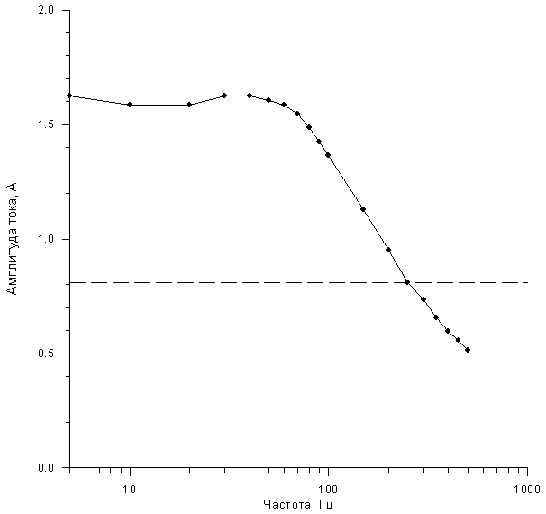
Рис. 7.7. Зависимость амплитуды тока от частоты при постоянстве амплитуды напряжения возбуждения.
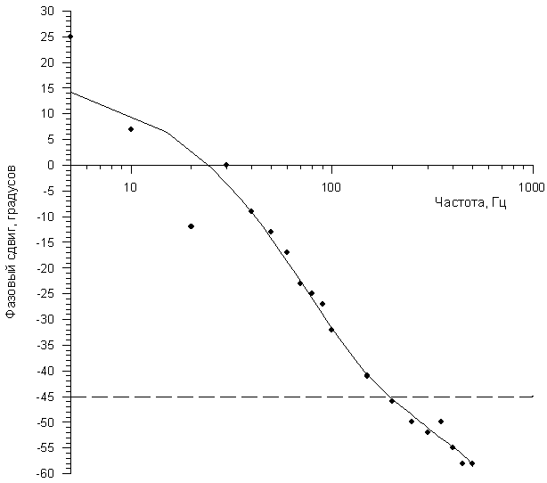
Рис. 7.8. Зависимость фазового сдвига между током и возбуждающим напряжением от частоты.
Измеренная частота среза (фазовый сдвиг 450) составляет около 200 Гц. Полагая индуктивность обмоток примерно равной 9 мГн, а сопротивление - примерно 6.2 Ом, с учетом добавочного сопротивления 1 Ом получаем постоянную времени 9/7.2 ≈ 1.25 мс и расчетную частоту среза 127 Гц. С учетом хотя и низкого, но неравного нулю выходного сопротивления усилителя, а также возможного влияния свойства обратимости привода (см. п. 8) результат измерений достаточно хороший.
В районе частот 20 … 30 Гц имеется аномалия, возможно также вызванная свойством обратимости привода (см. п. 8).
Изучение зависимости амплитуды колебаний якоря привода от частоты питающего напряжения проводилось на установке, собранной по схеме рис. 7.9. Задающий сигнал подавался от генератора Г3-118 (или аналогичного) через усилитель мощности [15] на катушки привода, включенные последовательно. Частота сигнала изменялась с помощью задающего генератора. Напряжение на катушках привода поддерживалось постоянным при изменении частоты, его амплитуда составляла 10 В. Для ее контроля к выходу усилителя мощности подключался один из каналов осциллографа UTD2102CEL-R. Удвоенная амплитуда колебаний штока якоря измерялась оптическим методом. В таблице 7.5 приведена зависимость удвоенной амплитуды колебаний якоря от частоты при постоянстве амплитуды питающего переменного напряжения, а на рис. 7.10 - зависимость амплитуды колебаний от частоты.
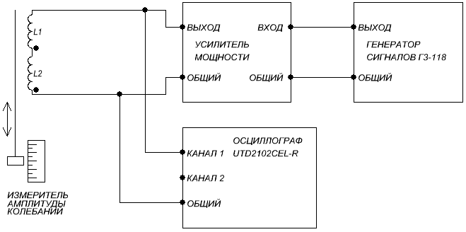
Рис. 7.9. Схема установки для измерения амплитуды колебаний якоря привода в зависимости от частоты питающего напряжения.
Таблица 7.5. Зависимость удвоенной амплитуды колебаний якоря привода от частоты питающего напряжения при постоянстве его амплитуды.
| Частота колебаний якоря, Гц | 10 | 20 | 30 | 40 | 45 | 48 | 49 | 50 | 51 | 52 | 53 | 55 | 60 | 70 | 80 |
| Удвоенная амплитуда колебаний якоря, мм | 1.50 | 1.60 | 2.20 | 3.50 | 5.40 | 8.40 | 8.80 | 9.40 | 9.10 | 8.25 | 7.80 | 6.50 | 4.30 | 2.10 | 1.30 |
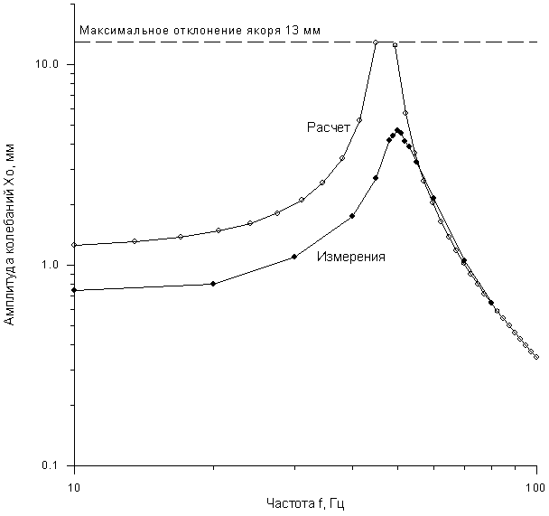
Рис. 7.10. Зависимость амплитуды колебаний якоря от частоты при постоянстве амплитуды напряжения возбуждения (шкалы логарифмические).
Результаты измерений достаточно хорошо согласуются с расчетом (см. п. 5, рис. 5.2), в котором не учитывалось демпфирование и трение. Суммарный коэффициент жесткости использованных пружин был измерен на установке, показанной на рис. 7.3, 7.4, и составил примерно 1530 Н/м (в расчете принято 1500 Н/м).
8. Обратимость привода
Обратимость – свойство привода работать в качестве электрогенератора (т. е. создавать электродвижущую силу (ЭДС)) при принудительном движении якоря. Обратимость можно использовать для демпфирования колебаний якоря при подключении обмоток к источнику сигнала с низким или отрицательным внутренним сопротивлением [8]. Результаты измерений индуктивности (п. 6) показывают, что при свободном якоре индуктивность больше, чем при зажатом. Особенно это проявляется на низких частотах при большом ходе якоря. Из этого можно сделать вывод, что привод генерирует ЭДС, встречную по отношению к питающему напряжению. В таблице 8.1 приведена зависимость амплитуды ЭДС последовательно соединенных катушек привода от частоты вынужденных колебаний его якоря. Эта зависимость носит линейный характер.
Таблица 8.1. Зависимость амплитуды ЭДС обмоток привода (катушки соединены последовательно) от частоты колебаний якоря (двойная амплитуда колебаний якоря 10 мм).
| Частота колебаний якоря, Гц | 1 | 2 | 3 | 4 |
| Амплитуда ЭДС обмоток, мВ | 100 | 200 | 300 | 400 |
9. Заключение
Привод при необходимости может быть масштабирован на другие диапазоны усилий и частот. В приводе может использоваться якорь другой формы, например, в виде цилиндра или с квадратным сечением с соответствующим изменением формы и конфигурации постоянных магнитов и катушек.
На основе данной конструкции возможна разработка длинноходового линейного двигателя - транслятора с якорем из стальных пластин или цилиндров с двух- или трехфазной системой катушек.
По вопросам расчета конкретных конструкций электромагнитных и магнитоэлектрических приводов обращайтесь к автору (см. раздел Контактная информация).
Ссылки:
05.08.2026
Альтернативные источники
энергии
Компьютеры и
Интернет
Магнитные поля
Механотронные системы
Перспективные
разработки
Электроника и
технология